diseños disponibles
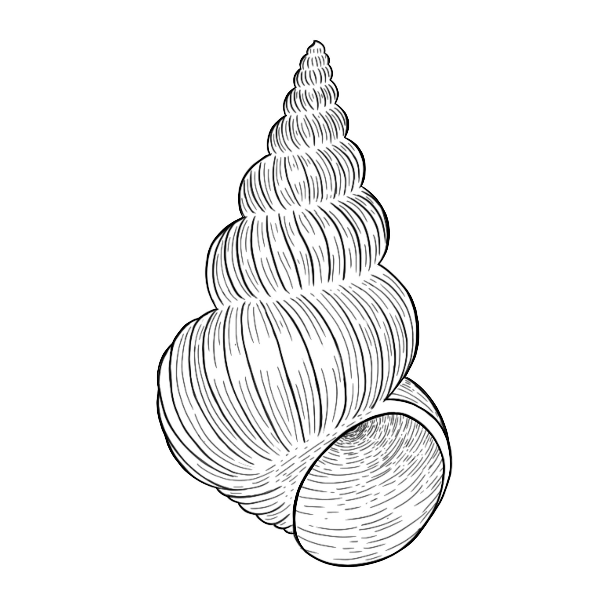
 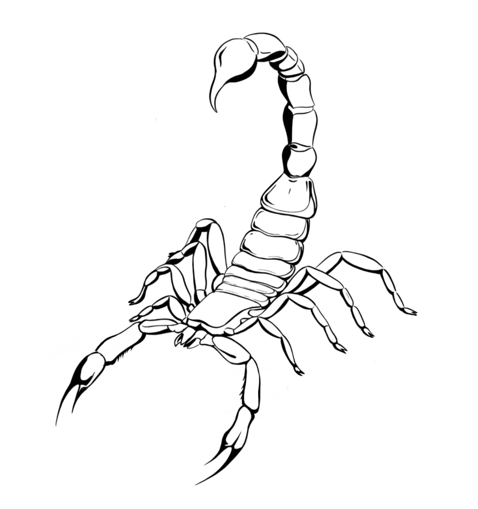
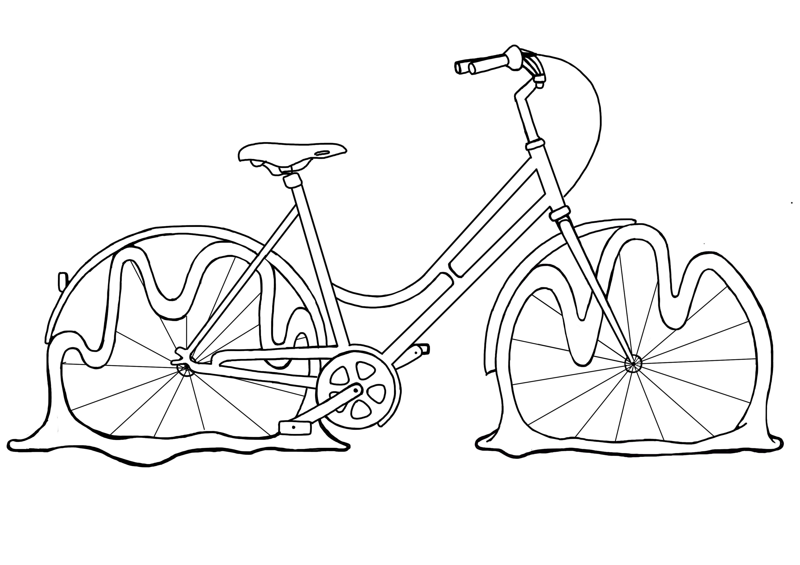
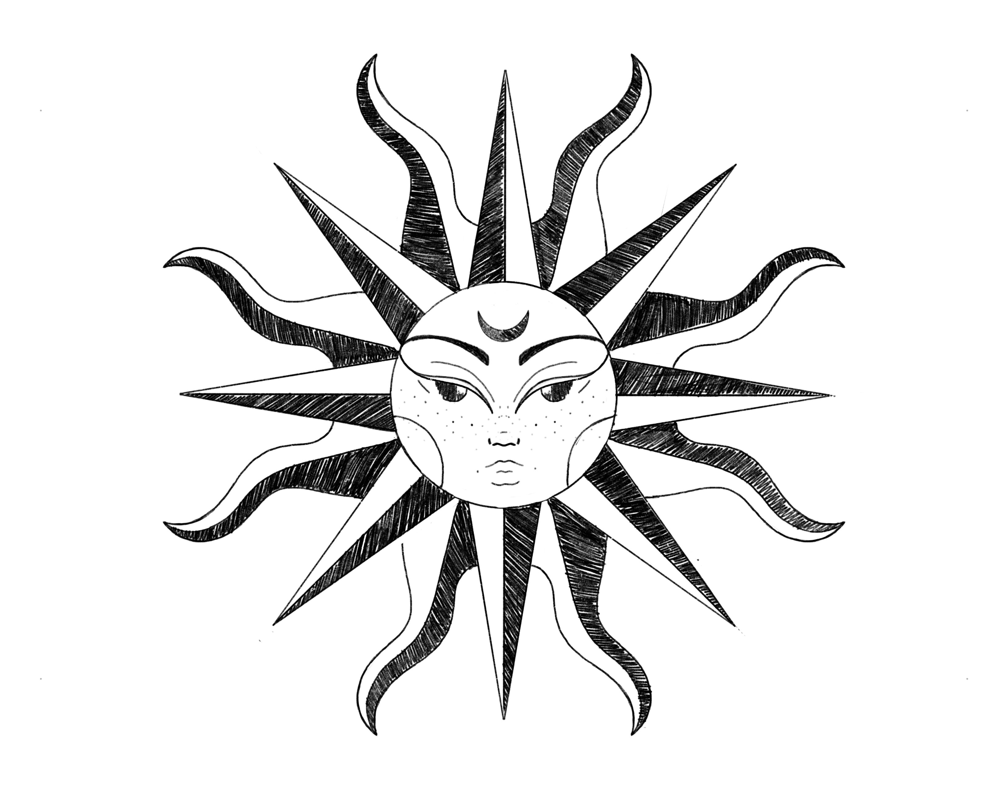
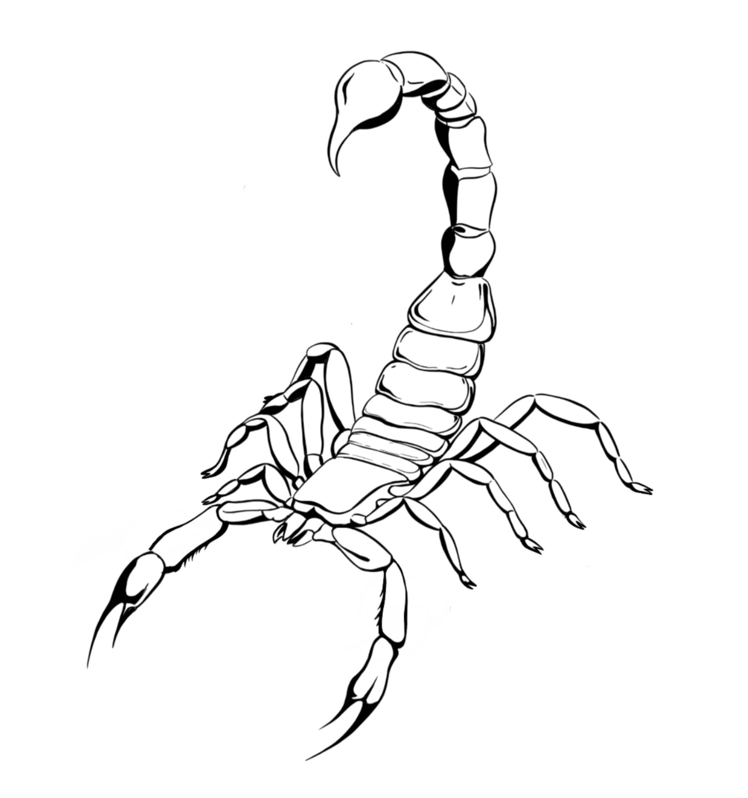
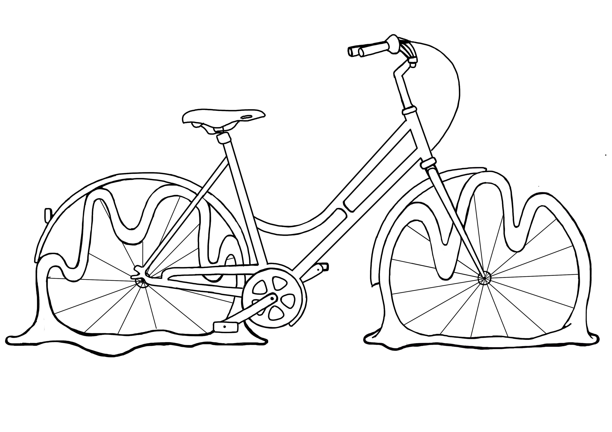
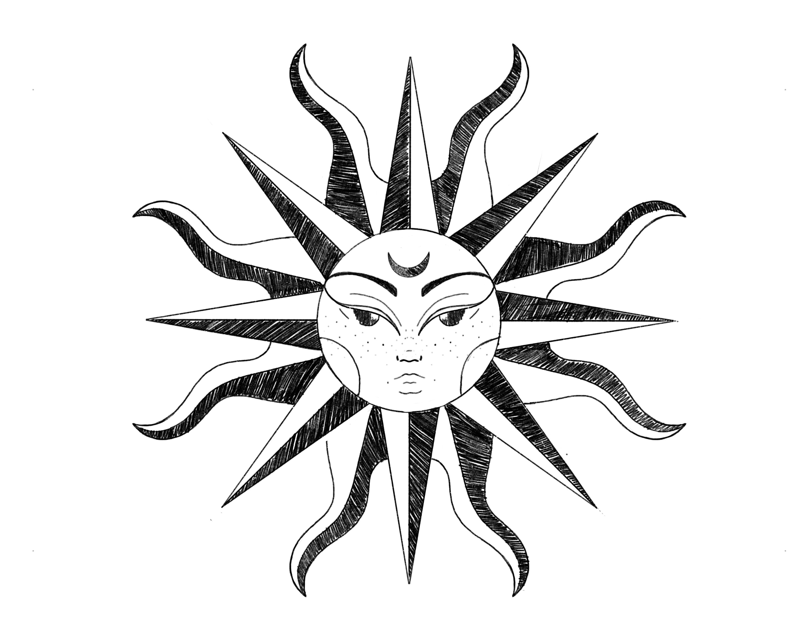

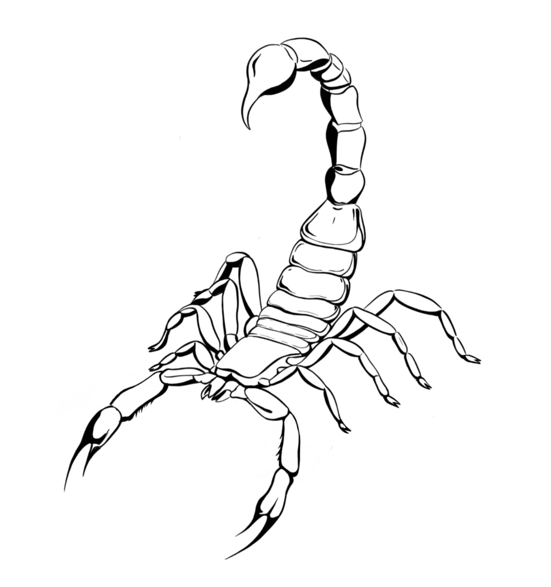
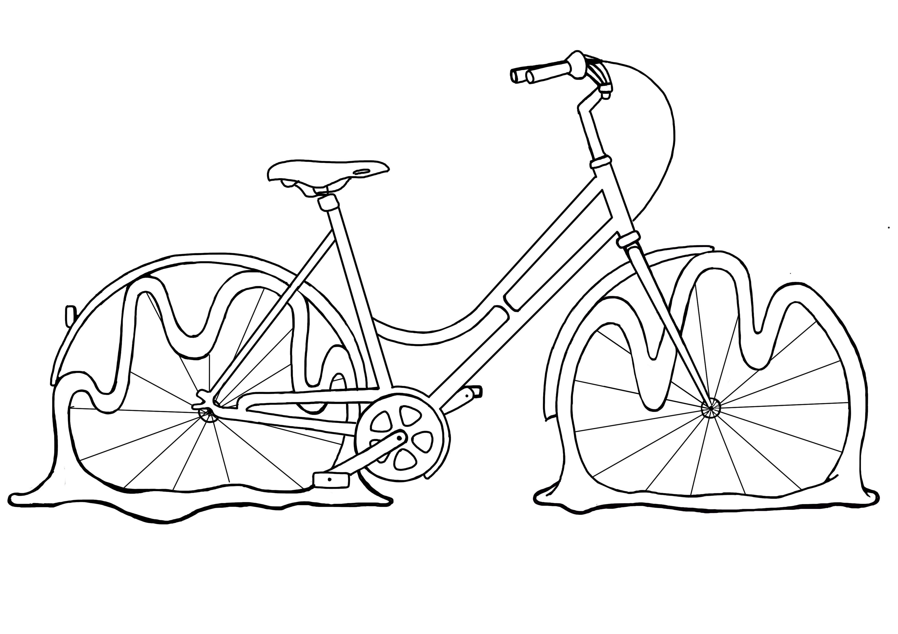
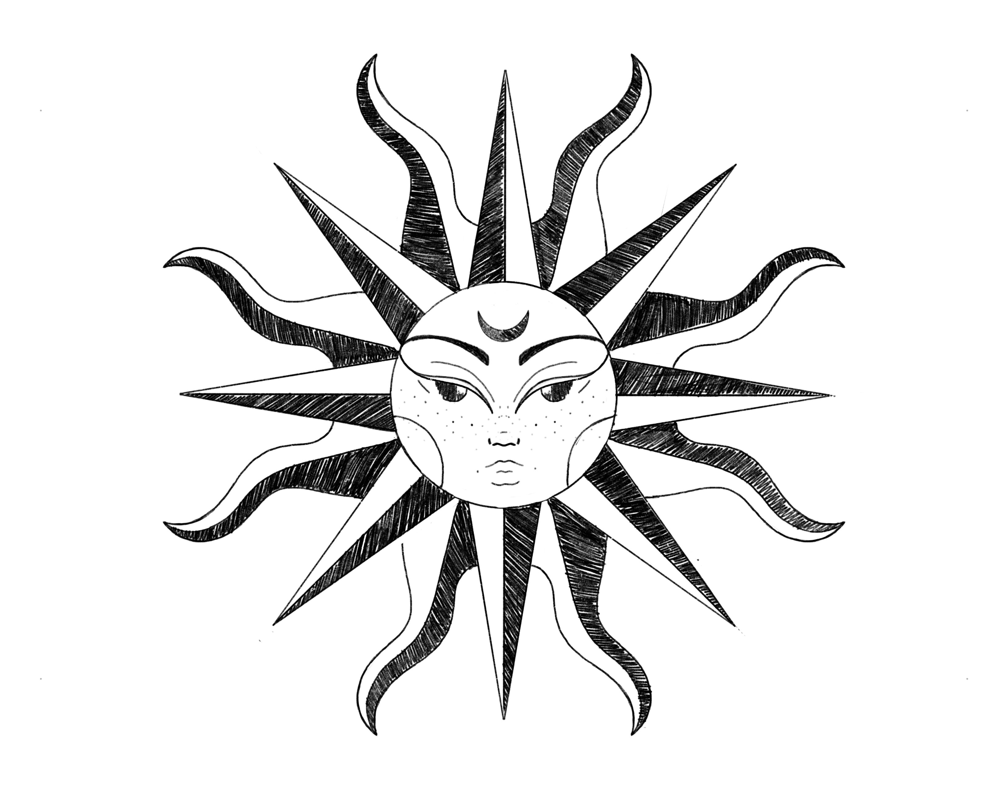
cuida tus tatuajes de la mejor manera
Es muy importante para el cuidado de tus tatuajes seguir los pasos indicados para prevenir infecciones, hacer que el tatuaje luzca lo más bello posible y que se mantenga de las mejores condiciones. Sigue estos simples pasos y conserva en tu cuerpo una obra de arte.
- retirar el film a partir de 4hs despues de hecho el tatuaje.El film no tiene adhesivo por lo cual retirarlo es muy fácil, puedes dejartelo en la noche ya que dormir con él la primera noche protegerá a tu tatuaje de raspones con las sábanas y podrás dormir más cómodo.
- para el lavado de tu tatuaje es importante que los primeros tres días lo laves solo con jabón neutro unas tresveces.
- Para utilizar crema esperar a luego del tercer día y aplicarla cuatro veces al día aproximadamente. Puedes usaralguna específica para cicatrización de tatuajes que puedes llevarte de mi estudio o sino es recomendable usar crema de ordeñe.
cosas que no deberías hacer:
- rascar la piel o quitar las costras
- sumergir tu tatuaje en agua
- exponer tu tatuaje al sol
- usar ropa ajustada que no deje respirar tu piel
Algunos diseños ya realizados
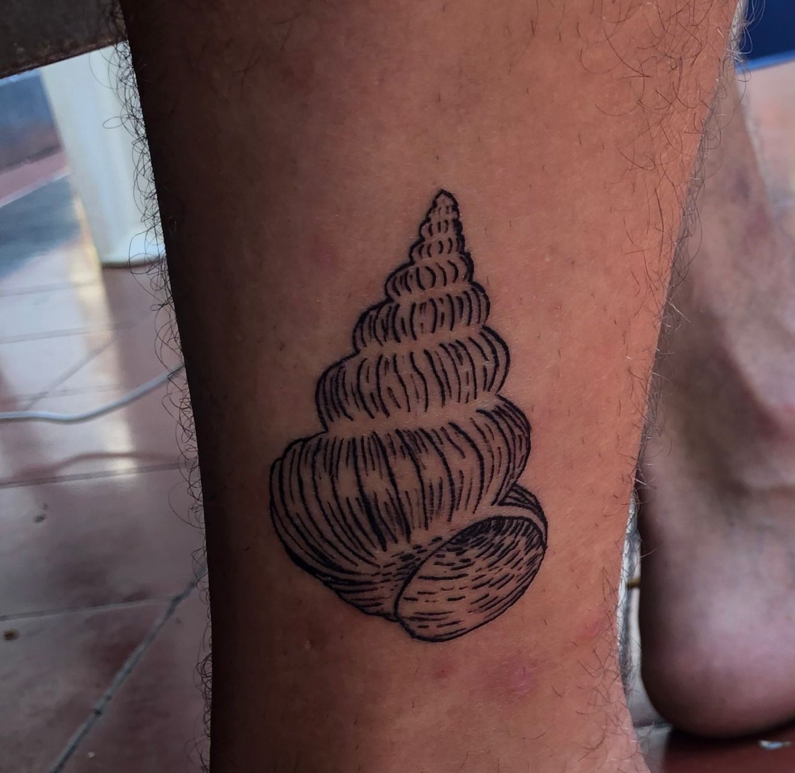
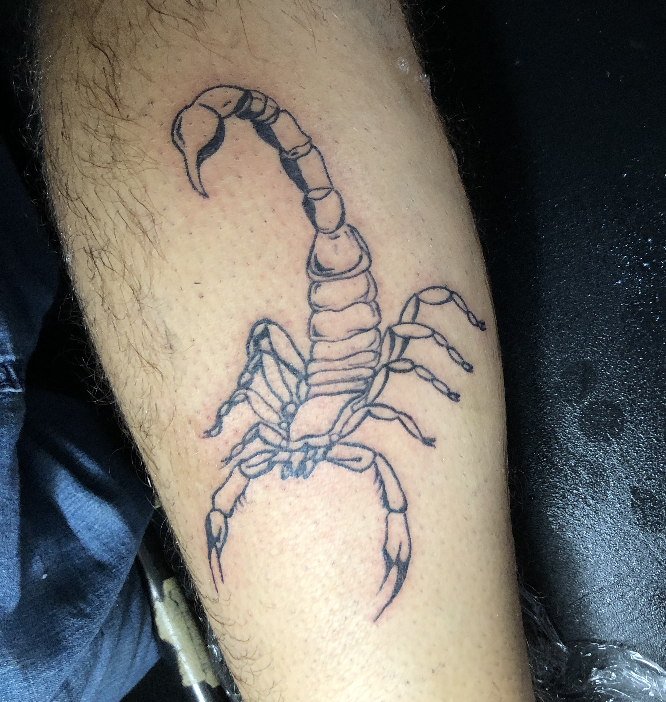
Te dejo un video de como curar los tatuajes apropiadamente para que puedas verlo siempre que necesites